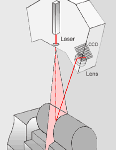

|
Arþ.
Gör. Burak
Veli GÖRÜR, Arþ.
Gör. Anýl
Nomak AKDOÐAN,
Prof. Mehmet Emin YURCÝ
Yýldýz Teknik Üniv. Makine Fak. Makine Malzemesi ve Ýmalat
Teknolojisi Anabilim Dalý
MÜHENDÝS
ve MAKÝNA, Aralýk 2003
GÝRÝÞ:
Endüstrinin
artan ihtiyaçlarýný karþýlamak üzere, 3D ölçme tekniklerine
olan ilgi ve iþletmelerin bu konudaki yatýrýmlarý giderek
artmaktadýr. Gerek mühendislik uygulamalarý ve imalat prosesleri
gerekse endüstriyel tasarým ve ürün geliþtirme faaliyetleri
hýzlý, hassas ve kullanýcý dostu ölçme sistemlerine ihtiyaç
duymaktadýr. Özellikle dijital görüntüleme teknikleri sayesinde
iþ parçasýna ait nokta verilerinin tek tek toplanmasý ile
imalat toleranslarýný doðrulama, yeniden imal edilecek parçalar
için geometri belirleme ve deformasyon problemleri görüntüleme
gibi pek çok tersine mühendislik ve muayene iþlemleri mümkün
olmaktadýr (1).
Günümüz
CAD/CAM uygulamalarýnda çoðunlukla bilgisayar ile oluþturulan
üç boyutlu modelden hareket edilerek uygun CNC veri oluþturulmasý
yoluyla imalat aþamasýna geçilmektedir. Buna alternatif bir
uygulama olarak "tersine mühendislik" diye tanýmlanan
yöntem de mevcuttur. Esasen bu yöntemi genel anlamý ile ele
aldýðýmýzda, elde mevcut olan mamul parçadan hareketle ve
imalat prosesindeki iþlem sýrasýnda geriye doðru gidilmek
suretiyle, operasyonlarýn tümünün çözümlenmesine yönelik çalýþmalarýn
bütünü olarak görmek gerekmektedir. Ancak, sanayimiz için
yeni sayýlabilecek bu terim, uygulamalarda anlam itibarýyla
biraz kýsýtlanarak elde bulunan bir modeli bir tarayýcý ile
taramak suretiyle oluþan verilerin uygun þekilde düzeltilip
yüzey haline getirilmesinden sonra CNC tezgahta iþlemek için
uygun forma sokulma iþlemi için kullanýlmaktadýr (2).
SAYISALLAÞTIRMA
ve TERSÝNE MÜHENDÝSLÝK:
Üç
boyutlu sayýsallaþtýrma iþlemi, var olan fiziksel bir objenin
üç boyutlu bilgisayar modelini elde etme yöntemidir. Objeden
elde edilen ve henüz iþlenmemiþ olan bu bilgi, tersine mühendislik
yazýlýmlarý ve uygulamalarý sayesinde ürün geliþtirme sürecinin
ilerideki aþamalarý için kullanýlabilir hale getirilmektedir.
(2)
Tersine
mühendislik, 3D sayýsallaþtýrma tekniklerini uygulamak suretiyle
bir iþ parçasýna ait nokta bulutu verilerinin toplanmasýna
ve dolayýsýyla CAD modelinin yaratýlmasýna olanak tanýmaktadýr.
Günümüzde, özellikle imalat proseslerinde karþýmýza çýkan
problemlerin analizinde, tersine mühendislik uygulamalarýna
yaygýn olarak yer verilmektedir. Ayrýca, tasarýmlarýn modifikasyonu
ve yeniden gerçekleþtirilmesi amacýyla, iþ parçasýnýn orijinal
CAD modeli ile ölçülen iþ parçasýnýn yaratýlan CAD verisi
karþýlaþtýrýlmaktadýr (3). Orijinal CAD
verisi ile bu veriye baðlý olarak imal edilmiþ parçanýn 3D
sayýsallaþtýrma verisinin karþýlaþtýrýldýðý kalite kontrol
uygulamalarýna da sýkça rastlanmaktadýr. Karmaþýk geometriye
sahip bir parçanýn 3D CAD verisi çok hýzlý ve hassas bir þekilde
elde edildikten sonra yazýlýmýn ilgili modülleri kullanýlarak
taranan parçanýn tasarýmý parametrik olarak yeniden yapýlabileceði
gibi herhangi bir tasarým deðiþikliðine de gidilebilmektedir.(2)
OPTÝK
ÖLÇME METODLARI ve SAYISALLAÞTIRMA:
|
|
|
Þekil
1. Sayýsallaþtýrma Yöntemlerinin Sýnýflandýrýlmasý
|
Optik
3D sayýsallaþtýrma iþlemleri, genellikle var olan bir objenin
3D modelini yaratmak, objeyi çok küçük detaylarýna kadar modellemek
ve gerçek yapýyý 3D modeliyle iliþkili olarak haritalamak
gibi amaçlar için uygun düþmektedir.
Ýþ
parçalarýndan sayýsal veri toplamak amacýyla uygulanan teknikler
dokunmasýz ve dokunmalý metotlar olmak üzere iki grupta incelenmektedir.
Dokunmasýz metotlardan ýzgara projeksiyonu ve laser ölçme
metodu en çok kullanýlan optik veri toplama teknikleri olarak
tanýnmaktadýr. (Þekil 1)
|
|
|
Þekil
2. Izgara Projeksiyonu
|
Izgara
projeksiyonu metodu, siyah ve beyaz þeritler halindeki desenlerin
ölçülecek yüzey üzerine bir sýra halinde projeksiyonu temeline
dayanmaktadýr. Bu desenler, bir LCD projektör vasýtasýyla
mümkün olduðunca eþit iki parçaya bölünen siyah ve beyaz çizgilerden
oluþmaktadýr (3) (Þekil 2).
3D
Sayýsallaþtýrma çözümlerinde, iþ parçalarýnýn yüksek çözünürlükteki
CCD kameralar vasýtasýyla çeþitli açýlardan elde edilen görüntüleri
geliþmiþ fotogrametri tekniklerini kullanan özel bir yazýlým
ile IGES ve STL gibi üç boyutlu standart veri formatlarýna
dönüþtürülmektedir. Bu sistemler, yüksek hassasiyeti, kullaným
kolaylýðý ve hýzý ile dünya çapýnda baþarýlý bir þekilde kullanýlmaktadýr
(2).
CCD
kameralar bir video kamera türüdür. Film yerine, lensler arkasýna
ýþýk yoðunluðunu elektronik sinyallere dönüþtüren ve bunu
direkt bilgisayara transfer edebilen bir CCD (Charge Coupled
Device) chip yerleþtirilmiþ bulunmaktadýr. CCD kamera, küçüklüðü,
hassasiyeti, sabitliði, düþük fiyatý ve uzun servis yaþamýyla
tercih gören bir donatýmdýr (4).
Basit
bir kullaným özelliðine sahip olan optik ölçme sistemleri,
az yer kaplamakta ve ölçme kafasý ile birlikte oturaklý bir
yapý þekli göstermektedir. Yalnýzca saniyeler süren bir tarama
iþleminin ardýndan hassas bir veri kalitesi elde edilebilmektedir.
Özellikle son zamanlarda saðlanan geliþmeler sayesinde, söz
konusu hassasiyet derecesi giderek artýþ göstermektedir. Elde
edilen tarama verisi bütünüyle ve verimli olarak iþlenebilmektedir.
Her bir ölçüm iþleminin sonunda, veri bütünlüðü açýsýndan
geri besleme alýnabilmekte ve geometrik özellik (feature)
tespiti gerçekleþtirilebilmektedir. Online görüntüleme yapýlmak
suretiyle çekim sýrasýnda parça veya kameranýn titremesinden
oluþan hatalar anýnda tespit edilerek yazýlým tarafýndan ölçümün
tekrarlanmasý tavsiye edilmektedir (5).
Yapýlan
ýzgara projeksiyonu uygulamasýnda, elde edilen sayýsallaþtýrma
verisi, iþ parçasýnýn daha önceden çizilmiþ CAD verisi, nokta
bulutunun mesh edilmiþ hali ve renkli doku haritasýnýn gösterildiði
görüntüler Þekil 3' te verilmektedir.
|
|
|
|
Þekil
3-a Parça CAD Verisi ile Ölçüm Verisinin Görüntüleri
|
Þekil
3-b Parçanýn Mesh Edilmiþ Görüntüsü ve Renkli Doku
Haritasý
|
Dokunmasýz
Laser tarama metodu, laser triangulasyonu prosesi ile çalýþmaktadýr.
Bu proseste, laser çizgisi sayýsallaþtýrýlacak yüzey üzerine
laser kafasýndan yaklaþýk 2 ½ inç uzunluðunda projekte edilmektedir.
CCD
kameralarý, laserden belli uzaklýkta olan parça üzerinden
yansýyan laser ýþýnýnýn ýþýðýný yakalamaktadýr. Laser çizgisinin
X,Y,Z koordinatlarý trigonometrik olarak hesaplanabilmektedir.
Kullanýlan
sensöre ve yazýlým ayarlarýna baðlý olarak, 650' den fazla
ve birbirinden baðýmsýz veri noktasý tek bir laser çizgisinde
toplanabilmektedir. Taranmýþ obje bundan böyle, birkaçyüz
noktadan milyonlarca noktaya varan ve genellikle nokta bulutu
olarak tarif edilen söz konusu veri noktalarý ile temsil edilmektedir.
|
|
 |
|
Þekil
4. Laser Tarama Mekanizmasýnýn Þematik Görünümü
|
|
|
|
Þekil
5. Laser Sayýsallaþtýrma Yöntemi
|
Parça
üzerinde taranan noktalarýn sayýsý, parçanýn büyüklüðüne ve
detaylarýna baðlýdýr. Çok detaylý parçalarý tarif etmek için
daha fazla noktaya ihtiyaç duyulmaktadýr.
Laser
tarama teknikleri geleneksel tekniklerden daha hýzlý veri
toplayarak sayýsallaþtýrma proseslerini kýsaltmaktadýr. Lazerle
tarama, kosinüs hatalarýndan, mekanik prob ofsetlerinden ve
prob büyüklüðü ile þeklinden doðan sorunlarý elimine etmektedir.
Laser
ile tarama yapmanýn birinci avantajý, prosesin dokunmasýz,
hýzlý ve koordinat lokasyonlarýnýn direkt olarak taranan obje
geometrisi üzerine düþen ýþýndan alýnmasý olayýdýr. Bu özellik,
hassas ve kýrýlgan parçalarýn ölçülmesi ve özellikle taranan
koordinat lokasyonlarýnýn, yüzey koordinatlarý boyunca spline
eðrileri veya yüzey oluþturmada, CAD/CAM uygulamalarý için
kullanýþlý olmasýný saðlamaktadýr (7).
Laser
ýþýðýnýn yüksek çözünürlüðü ve ince ýþýný sayesinde, ayný
zamanda, mekanik problarýn giremeyeceði detaylý yüzey geometrilerinden
istenilen hassasiyette veri alýnmasý saðlanmaktadýr. Bu sebeple,
otomotiv, uzay, týp, spor ekipmanlarý ile oyuncak, elektronik
ve mücevher sanayiinde sýkça kullanýlmaktadýr.
SONUÇLAR
ve DEÐERLENDÝRMELER:
Tüm
laser tarama tekniklerinde, ýþýk kaynaðý olarak birer laser
ýþýný kullanýlmaktadýr. Ancak, bu tür ýþýk kaynaklarý bazý
objeleri sayýsallaþtýrmada her zaman için uygun düþmemektedir.
Projeksiyon metodunda ise, ýþýk kaynaðý olarak kesinlikle
güvenli olan sýradan halojen beyaz ýþýk kullanýlmaktadýr.
Laser
tarama teknikleri kullanýlarak elde edilen ilk veri bir nokta
veya bölge profili olabilmektedir. Bir nesnenin tüm yüzeyini
kaplamak için mekanik ve optik tarayýcýlar birlikte kullanýlabilmektedir.
Bu ardýþýk veri toplama yönteminde genelde düþük veri toplama
hýzlarý söz konusudur.
3D
sayýsallaþtýrma tekniðinde, ýþýk projeksiyonu ile saniyede
300.000 (1 milyona kadar çýkabilir) nokta verisinin elde edilmesini
saðlayan paralel veri toplama tekniði uygulanmaktadýr.
Laser,
yoðunlaþtýrýlmýþ tek renkli ýþýk kaynaðýdýr. Laser tarama
tekniði benekler (speckle) yüzünden problem oluþturmaktadýr.
Benekler, hatalý verinin ana kaynaðý olup laser kaynaðýna
rastgele karýþmasýyla problemlere neden olmaktadýr. Bunlara
ilaveten, tek bir laser kaynaðý kullanýlarak renkli doku verisinin
yaratýlmasý olanaksýzdýr. Laser tarama tekniðinde ikinci bir
kamera kullanýlmasýnýn nedeni, söz konusu renkli doku verisinin
yaratýlma isteðine dayanmaktadýr.
Izgara
projeksiyonu 3D sayýsallaþtýrma metodunda, 3D geometrik ve
renkli doku datasý için tek bir kamera kullanmaktadýr. Buradaki
çift kameralý veri toplama metodu, doðru bir þekilde 3D geometrisiyle
iliþkili renkli doku haritasýný oluþturmayý mümkün kýlmaktadýr.
Optik
ölçme gözönüne alýndýðýnda, çözünürlük ve tamlýk arasýndaki
farkýn tanýmlanmasý gerekmektedir. Çözünürlük, sensörün algýlayabildiði
mesafedeki en küçük deðiþikliktir. Tamlýk ise, taranan objenin
optik kalitesinin fonksiyonudur. Eðer obje mat bir yüzeye
sahipse, tamlýk ve çözünürlük hemen hemen ayný olacaktýr.
Eðer obje parlak bir yüzeye sahipse, laser ýþýný CCD üzerinde
parlayýp titreme oluþturmaktadýr. Bu da, günümüzde, laser
verisinde kullanýlan geliþmiþ yazýlýmlarla artýk filtre edilebilmekte
ve oluþan parazitler azaltýlabilmektedir. Diðer taraftan parça
ýþýðý absorbe eden çok koyu renkte bir yüzeye de sahip olabilir.
Bu durumda, sensöre yeterli miktarda ýþýk dönemeyecektir.
Anýlan dezavantajýn ortadan kaldýrýlmasý için tarama iþlemlerinden
önce, objelerin yüzeyleri sprey boyalarla açýk gri tonlarda
ve ince tabakalar halinde boyanmalýdýr (7).
Ýmalat
sýrasýndaki muayene iþlemleri gözönüne alýndýðýnda, optik
ölçme cihazlarý için zaman döngüsünün kýsa ve dolayýsýyla
iþlemin hýzlý olmasýndan dolayý imalat hatlarýndaki on-line
ölçümler için kullanýlmaktadýr. Optik ölçme cihazlarý ile
kaporta tetkiklerinde, parça yüzeyinin tümü taranmakta; böylelikle
alt ve ana montaj iþlemleri daha baþarýlý bir þekilde gerçekleþtirilebilmektedir.
Bununla birlikte, halen sanayimizde gerçekleþtirilen ÝPK çalýþmalarý
için yaygýn bir þekilde CMM'ler kullanýlmaktadýr. Çünkü bunlarýn
ölçme prensibi, alýnan vektörel ölçme verisinin saðladýðý
tamlýða dayanmaktadýr. Burada, optik ölçme cihazlarýnýn kullanýmýndan
duyulan baþlýca kaygý ise, saðlayabilecekleri tamlýk ve ölçme
tesirleri yönünden olmaktadýr.
Tersine
mühendislik uygulamalarý ile parça geliþtirme ve tasarým faliyetleri
yönünden bakýldýðýnda, iþ parçalarýnýn kameralar vasýtasýyla
görüntülenmesi suretiyle elde edilen sayýsal verilerin söz
konusu iþlemlerde pratik bir þekilde ve baþarýyla kullanýldýðý
görülmektedir. Ancak, sanayimizde bu tür ölçme cihazlarýnýn
kullanýmý henüz gereken ölçüde yaygýnlaþmamýþtýr.
TEÞEKKÜR:
Makalenin
hazýrlanmasýnda vermiþ olduklarý destekten dolayý Cadem A.Þ.
ve GOM International AG yetkililerine teþekkür ederiz.
KAYNAKÇA:
1.
Akdogan, A., Görür, B.V., Yurci, M.E., Durakbasa, M.N., "Comparsion
of Coordinate Measuring Machines Digitizing Capability and
an Optical Digitizer" WEISIC 2003, Proceedings of 4th
Workshop on European Scientific and Industrial Collaboration,
University of Miskolc, Hungary, 28-30 May, 2003, pp.261.
2.
www.cadem.com.tr/gom
3.
Broggiato, G.B., Campana, F., Gerbino, S., "Shape deviation
Analysis on Sheet-Metal Parts Through Reverse Engineering
Techniques", XII ADM International Conference-Italy-Sept.
5th-7th, 2001.
4.
www.opton.co.jp/techrep/md/md4/mde4.html
5.
www.gom.com
6.
Görür, B. V., "Kalýpta Biçimlendirilen Sac Parçalarýn
Geometrik Spesifikasyonlarý ile Biçim ve Boyut Sapmalarýnýn
Ýncelenmesi", YTÜ Fen Bilimleri Enstitüsü, Yüksek Lisans
Tezi, Tez Danýþmaný: Prof M. Emin YURCÝ, 2003
7.
www.laserdesign.com/faq.htm
8.
www.appliedprecision.ca
|